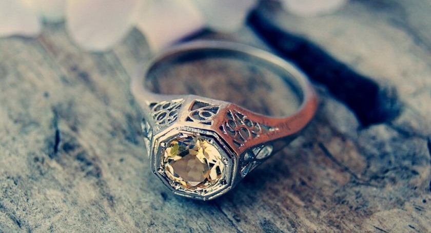
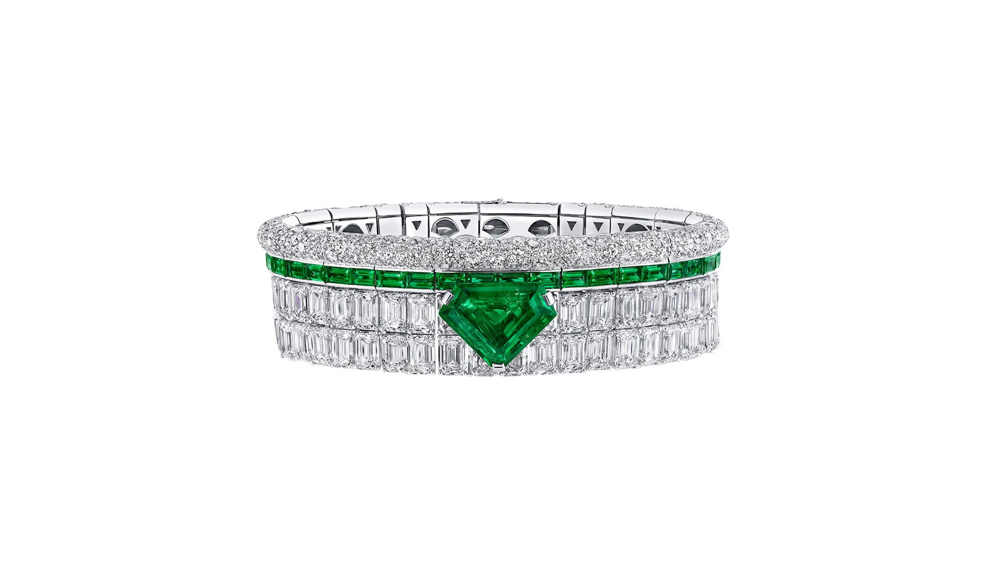
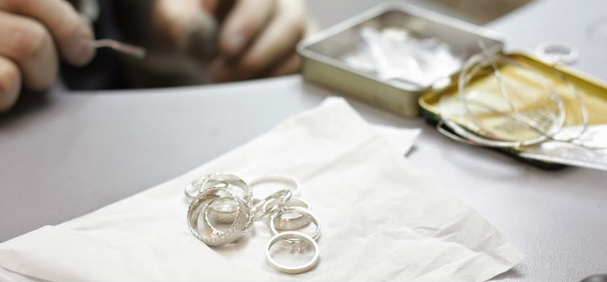

Ювелірне мистецтво має глибокі корені, які сягають ще давніх цивілізацій.
Перші прикраси були виготовлені з каменів, кісток та золота.
У Стародавньому Єгипті ювелірні вироби використовувалися не лише як прикраси, але й як оберіги та символи статусу.
Золото вважалося металом богів, а срібло — символом чистоти.
У Середньовіччі ювелірні вироби стали важливою частиною релігійного мистецтва.
Виготовлялися розкішні хрести, ікони та інші реліквії.
У епоху Відродження ювелірне мистецтво досягло нового рівня, коли майстри почали створювати складні композиції з дорогоцінних каменів та металів.

Сучасні тенденції у ювелірному мистецтві
Сьогодні ювелірна справа є однією з найрозвиненіших галузей моди.
Дизайнери поєднують традиційні техніки з сучасними технологіями, створюючи унікальні прикраси.
Популярність набирають екологічні ювелірні вироби, виготовлені з перероблених матеріалів.
Однією з головних тенденцій є мінімалізм. Легкі, елегантні прикраси з тонкими деталями стають улюбленими серед молоді.
Також популярні вироби з незвичайними каменями, такими як місячний камінь, аметист та опад.

Як обрати ювелірний виріб?
Вибір ювелірного виробу — це важливий процес, який потребує уваги до деталей.
Ось кілька порад:
- Визначте свій стиль. Вибирайте прикраси, які відповідають вашому образу життя та уподобанням.
- Звертайте увагу на якість. Перевіряйте пробу металу та якість каменів.
- Оберіть правильний розмір. Кільця, браслети та намиста повинні бути зручними.
- Враховуйте подію. Для повсякденного носіння підійдуть прості прикраси, а для особливих випадків — більш розкішні.

Догляд за ювелірними виробами
Щоб ваші ювелірні вироби залишалися блискучими та красивими, дотримуйтесь цих простих правил:
- Чистіть прикраси регулярно. Використовуйте м'яку тканину або спеціальні засоби для чищення.
- Уникайте контакту з хімікатами. Знімайте прикраси під час прибирання або використання косметики.
- Зберігайте прикраси окремо. Використовуйте окремі коробочки або мішечки, щоб уникнути подряпин.
- Перевіряйте застібки. Регулярно перевіряйте, чи надійно закріплені камені та застібки.
